Medieval Apocalypse
Medieval Apocalypse is a game prototype where I worked as UE4 solo developer for a client to upload it to steam.
• Built an open world made up of islands with different biomes.
• Used LODs to optimize the performance of the game.
• Created a game trailer using level sequencer in UE4.
• Modified some textures using photoshop to align them to the style of the game.
Tools & resources used:
• Unreal Engine 5
• Maya
• Unreal Marketplace Assets
• Quixel Megascans
• Da Vinci Resolve
• Photoshop
Windows build available on itch.io.
Trailer of the game
Trailer created and rendered directly in UE4 using marketplace assets and level sequencer
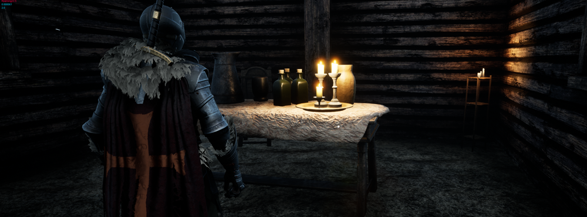
Some buildings were enterable and had props in them with story information or mission objects
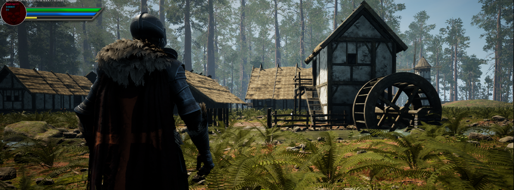
Desert towns and villages

General view of different islands
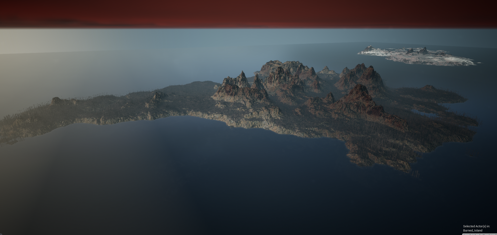
Burned island general view.
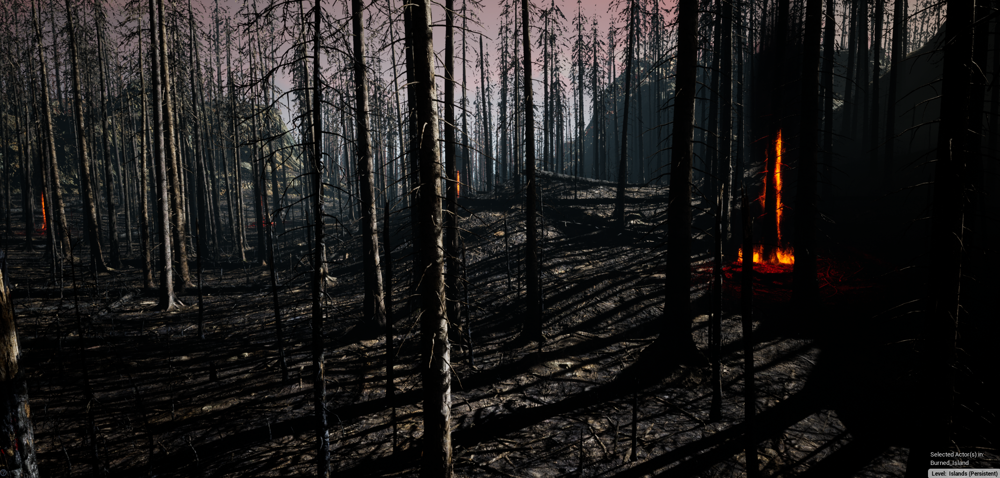
Assets and materials are from a marketplace asset

Lightning was important in this part so the player would get attracted to the key point of the mission

Castle's ruins - This were places all around the map where played would find more information about the story of the game and how the infection started
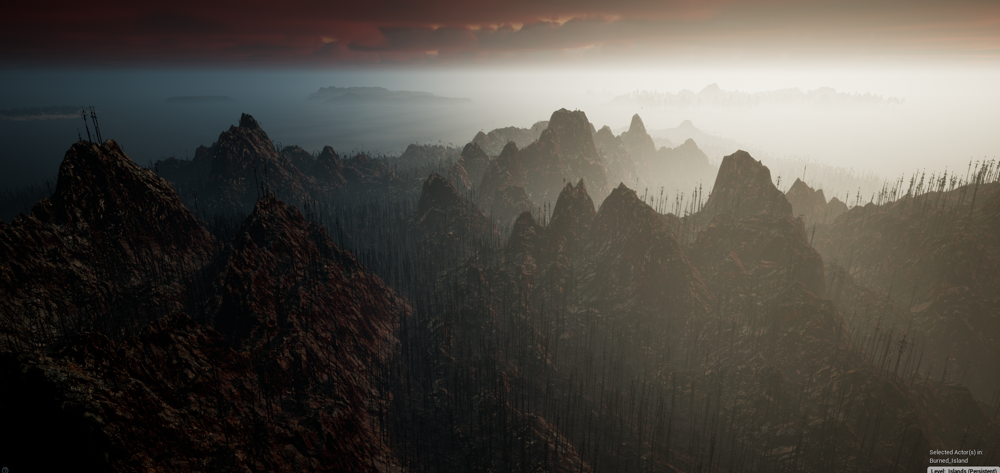
General view of the burned island
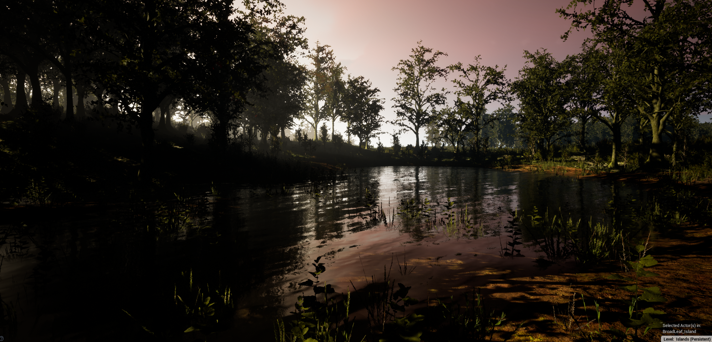
Lake in the forest island
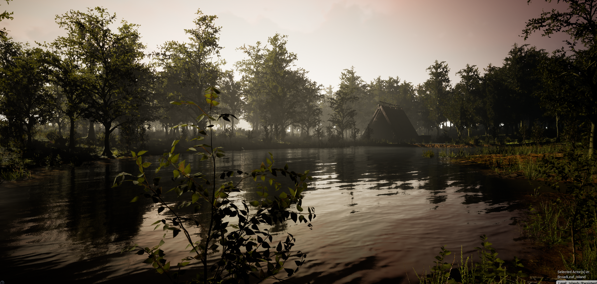
Second lake in the forest island
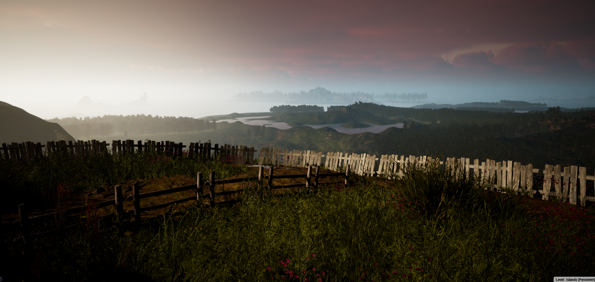
View from the mountain on the forest island
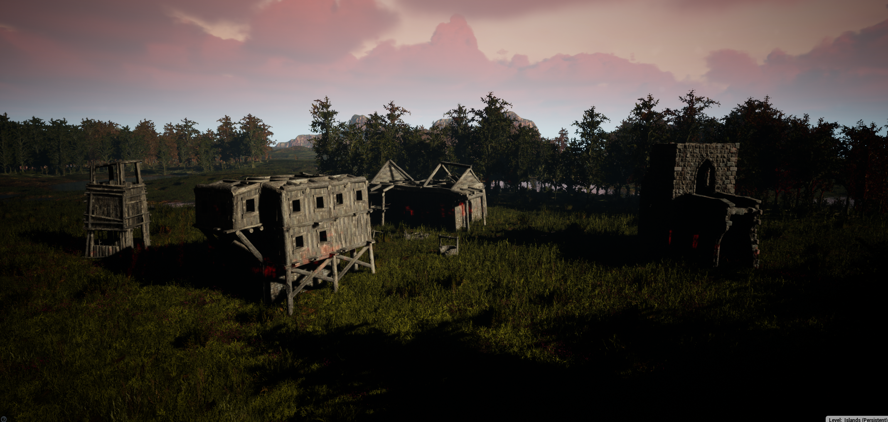
Village in ruins
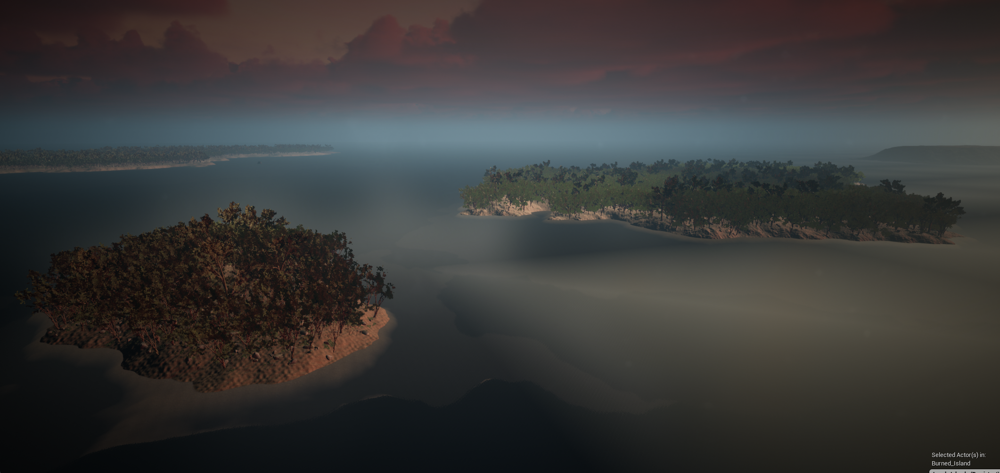
General view of the jungle island

Campment in the jungle island

Campment in the jungle island
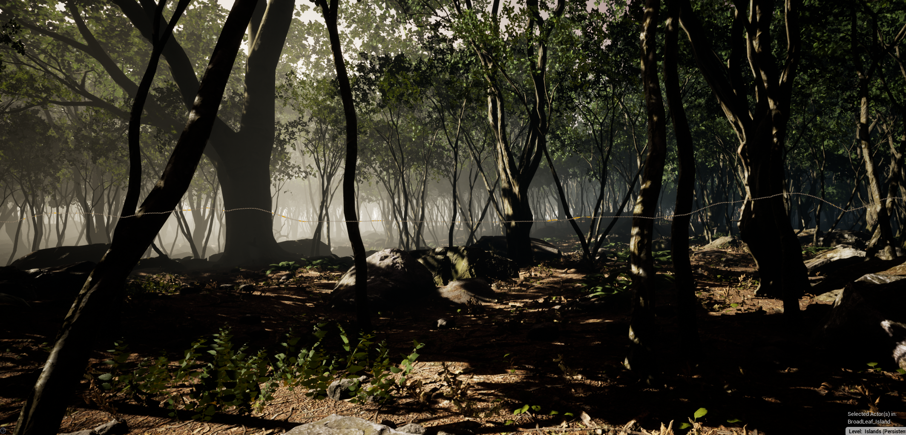
Jungle island landscape and foliage

River in the jungle island
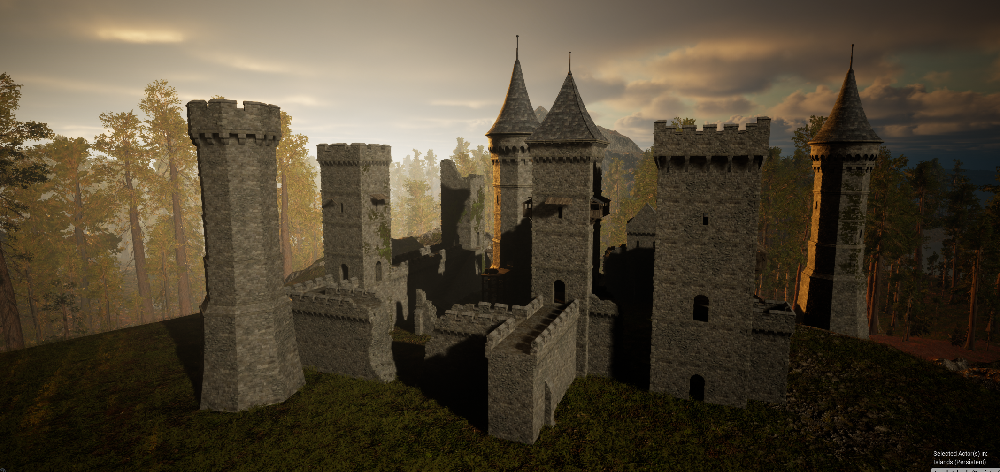
Abandoned castle

Abandoned village

Camps in the abandoned village (procedural based on splines)
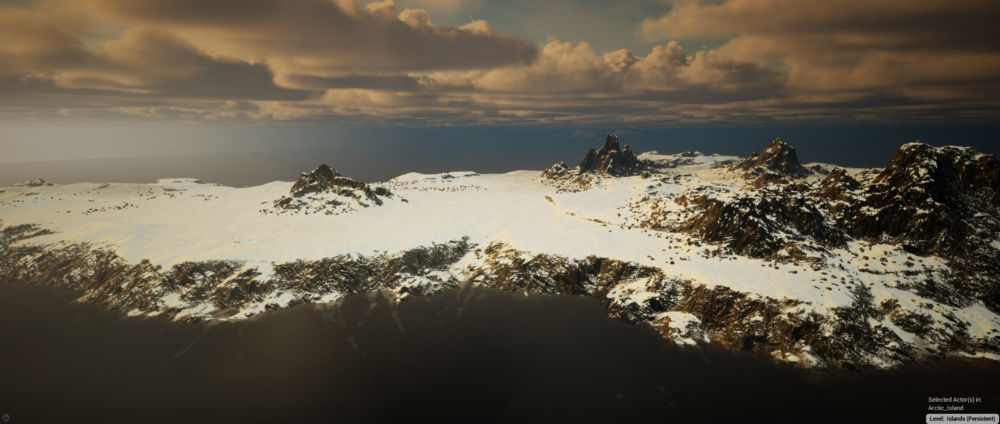
General view of the artic island (foliage not implemented yet)
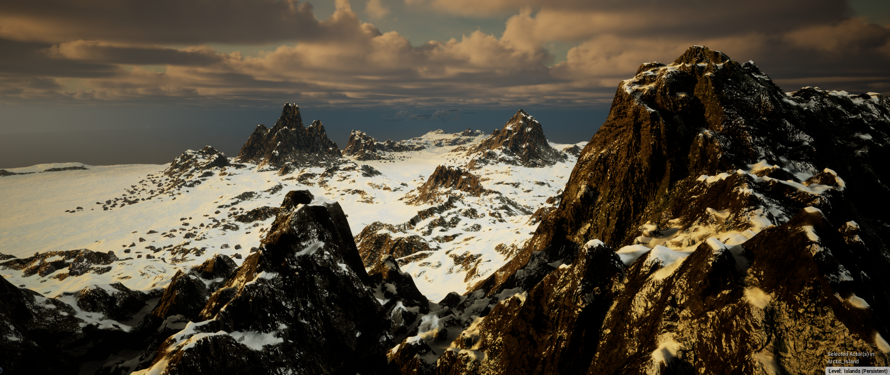
In-editor footage
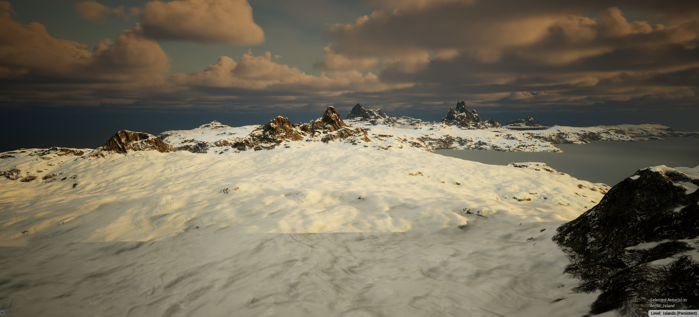
landscape footage
Blueprint Utility Tool
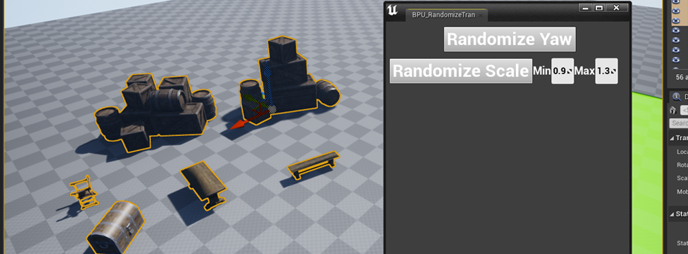 Preview of the tool
Showcase of the tool
Blueprint Utility Nodes
Gameplay
Showcase of the game prototype